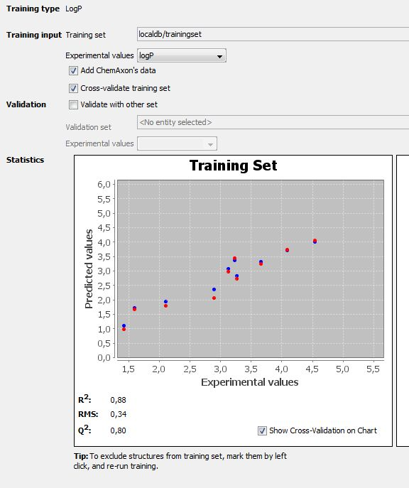
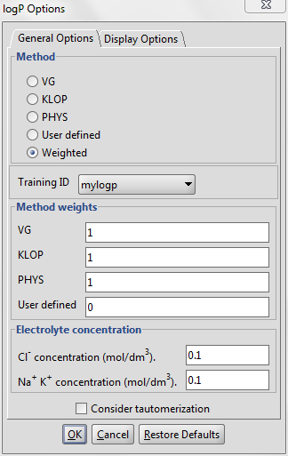
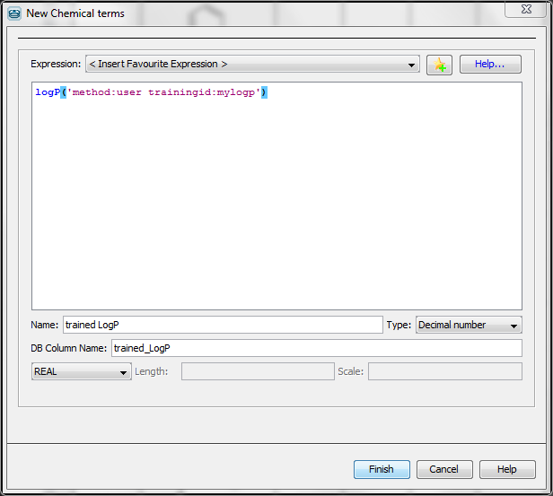
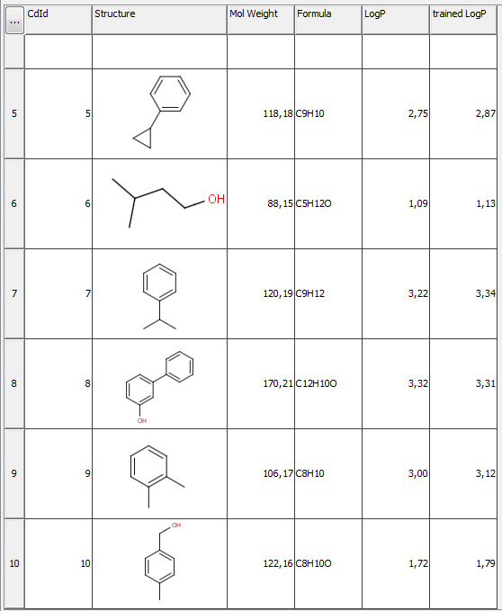

Training of the LogP plugin
If you feel your experimental data could improve the performance of the default logP calculator,
you can take advantage of the supervised logP learning method that is built
into this calculator.
What do you need to see clearly in logP model building?
If you create a local logP model then the scope of the logP calculator will be
limited. It means that the calculated logP will only provide reasonable prediction
for a few types of structures. Practically only those types of structures will be
predicted correctly which were introduced to the training set during the teaching process.
For example, if the training set contains only certain types of hydrocarbon and
no other functional groups are present in the training set then
that the predicted logP of any amine-like structure will not be accurate.
In other words, you need to be aware that a more robust general logP model requires a
large, diverse training set with thousands of structures.
You can generate a logP training library via cxcalc and via Instant JChem as well.
Training of the LogP plugin
Instant JChem
The training of the LogP plugin is simplest by using the graphical interface of Instant JChem, where the
logP and general property trainings are available. See the IJC documentation for details.
The created logP training library will be stored on your computer in the same place where the training library created by cxtrain, and it also can be used via Marvin, cxcalc and Chemical Terms.
Features:
- Graphical User Interface
- Cross validation
- Validation with other set
- Exculde unwanted strucures

cxtrain
Creating a training set
As the first step of the training via cxtrain, you have to create a training set of any molecule file format which supports sdf properties (such as sdf or mrv) from your experimental
data. This can be easily done by using the graphical user interface of Instant JChem. This training set must contain the following items:
- structure
- logP values in a property field named LOGP
See this bit of an example file (logP_trainingset.sdf ).
 After that, you have to run the training algorithm which
creates a logP training library from your data. This will be stored on your computer.
After that, you have to run the training algorithm which
creates a logP training library from your data. This will be stored on your computer.
Generating the logP training library
Execute the following command from command line :
cxtrain logp -t LOGP -i [library name] -a [training file]
See detailed options here.
(Note usage -a is optional, but recomended. It adds the built-in LogP training set to your data.)
Example
cxtrain logp -t LOGP -i mylogp -a logP_trainingset.sdf
After this step you can use this logP training library via Marvin, cxcalc, or Chemical Terms.
Application
Marvin
- Choose MarvinSketch menu:Tools > Partitioning > logP.
- Select the User defined or the Weighted method to activate the training option.
- If you have created multiple training sets, choose the needed one from the dropdown list below the checkbox.

cxcalc
To apply your LogP dataset use the parameter --trainingid combine with the parameter --method.
cxcalc logp --method user --trainingid[library name] [input file/string]
Example
$ cxcalc logp --method user --trainingid mylogp "CC(C)CCO"
Result
id logP
1 1,13
$ cxcalc logp "CC(C)CCO"
id logP
1 1,09
Chemical Terms
Evaluator
The parameters method and trainingid is utilized in Chemical Terms Evaluator as well.
$ evaluate -e "logp('method:user trainingid:[library name]')" "[input file/string]"
Example
$ evaluate -e "logp('method:user trainingid:mylogp')" "CC(C)CCO"
Instant JChem
You can also apply your logP training library via Chemical Terms in Instant JChem .
- Choose the 'New Chemical Terms Field icon' on the panel on the right side.
- Type the chemical term into the window, use the parameters method and trainingid. Do not forget to adjust the Name, the Type and the DB Column Name.
Example
The following figure presents the usage of LogP training in the 'New Chemical terms' window.
The expression logP('method:user trainingid:mylogp') defines that the plugin use the user defined logP training library named myplogp

The part of the results of this calculation is presented on the next figure. You can see the difference between the untrained(column 5.,LogP) and trained (column 6., Trained LogP) logP values.
